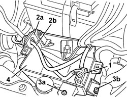

5505A29 CONTAINER FOR ADDITIONAL JUNCTION UNIT IN ENGINE COMPARTMENT - R.R. WITH ADDITIONAL JUNCTION UNIT REMOVED
- Path
- Procedures > 55 ELECTRICAL EQUIPMENT > 5505 INSTRUMENT/GAUGE ELECTRICAL CIRCUITS > 5505A MULTI-FUNCTION COMPONENTS > 5505A29 CONTAINER FOR ADDITIONAL JUNCTION UNIT IN ENGINE COMPARTMENT - R.R. WITH ADDITIONAL JUNCTION UNIT REMOVED
- Kind
- repair procedure (removal / refitting; the operation number is the code)
- Applies to
- all engines; all production periods
- Interactive page
- https://sloeber94.github.io/elrnDB-aBrrSpdr/en/#/946002329
Applies to: all engines; all production periods
 Removing
Removing
 Refitting
Refitting1. Release the electrical connection for the retainer.
2. Release the duct (2a) and the electrical wiring (2b) from the container.
3. Undo the bolt (3a) and the nut (3b).
4. Remove the control unit container.

Applies to: all engines; all production periods
Refitting
Removing- Check that the additional junction unit container is not damaged.
- Place the container in position and secure it using the nut and the bolt.
- Fit the duct and the electrical wiring in place.
- Connect the electrical connection to the retainer.